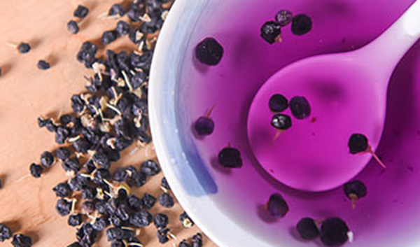
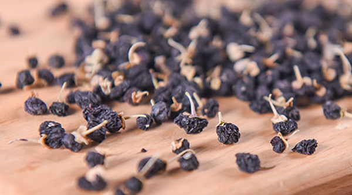
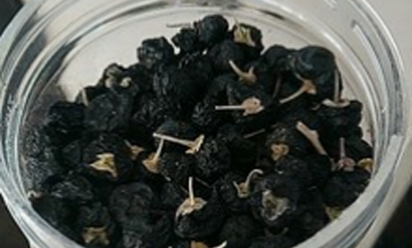
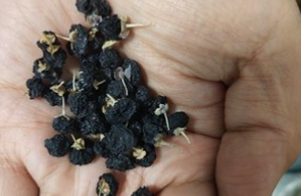

黑枸杞是现在比较火的养身保健的滋补品，黑枸杞有着增强免疫力并且能够抗衰老的功效，是很好的滋补身体的药材。使用黑枸杞滋补是可以泡茶饮用的，但是在用黑枸杞泡茶时要注意水温不能太高，一次使用的量不能太多，过敏的人不要食用。
1、 水温合适

黑枸杞泡水是需要合适的水温的，这是因为水温太高是会破坏黑枸杞的营养，这是因为黑枸杞是有多种营养物质和大量的花青素的，太高温度的水是会破坏其里面的成分，破坏药性。所以在用黑枸杞泡水喝的时候要注意尽量使用60°C以内的温度。
2、 用量适当

黑枸杞虽然是有着滋补的功效，同时黑枸杞是很好的养身的中草药但是所有的养身滋补的药物都要注意使用的剂量。黑枸杞滋补身体的时候要注意使用的量不能太多，所有黑枸杞是在使用时要注意不要使用过量的剂量。
3、 过敏的人不要食用
对黑枸杞过敏的人最好不要食用，过敏的反应症状有着吃了黑枸杞之后是会出现皮肤的过敏反应，部分过敏反应的症状还有肠胃过敏出现腹泻和便秘的情况。像过敏体质的朋友特别是长期对中草药过敏朋友是最好不要随意使用黑枸杞来滋补。
4、 阴虚患者不适宜
黑枸杞虽然有着滋补的功效但是并不适合阴虚患者使用用，这是黑枸杞是热性的滋补药，阴虚患者随意吃黑枸杞来滋补身体是会引起上火，导致身体的阴虚更加严重，所以建议阴虚患者不要使用黑枸杞滋补。
5、 脾胃虚弱者谨慎

脾胃虚弱的患者是最好不要随意使用黑枸杞来进行泡水滋补身体，这是因为黑枸杞虽然有着滋补的功效，但是脾胃虚幻的使用黑枸杞是会导致拉肚子和便秘、腹痛的情况所以不建议脾胃虚弱的患者食用。
6、 发霉的不能泡

黑枸杞在泡水喝的时候要注意尽量不要使用发霉的黑枸杞泡水，这是因为发霉的食物食用是有着致癌的风险。黑枸杞这类的药材如果保存不当是非常容易生霉的，所以黑枸杞泡水的禁忌还有不要使用发霉的泡水饮用。
结语：通过上文的介绍，相信大家都了解了关于黑枸杞泡水喝的禁忌，希望大家在使用黑枸杞滋补身体的时候要注意这些禁忌，避免在使用黑枸杞时，对黑枸杞的营养造成了破坏。